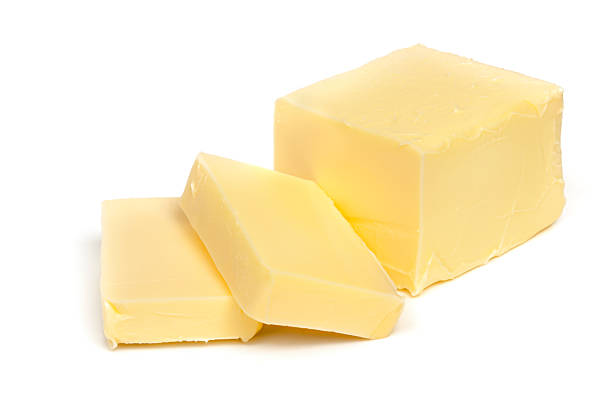
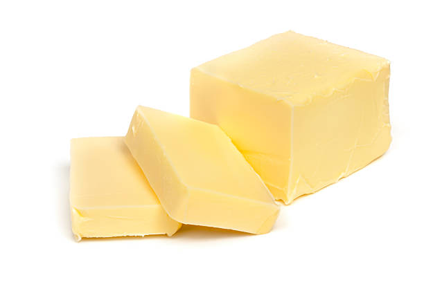

classes of food
protein
Proteins are made up of chemical 'building blocks' called amino acids. Your body uses amino acids to build and repair muscles and bones and to make hormones and enzymes. They can also be used as an energy source. You can easily meet your daily protein needs by following the Australian Dietary Guidelines.
- fish
- eggs
- checken


fat an oil
The difference is that those that stay solid at room temperatures are called fats while those that stay liquid at room temperatures are called oils. Chemically, each fat or oil molecule consists of three long strings of fatty acid molecules combined with a glycerol molecule.
- hard margarines
- goos fat
- palm oil
- butter
 


- fat an oil
- -temperatures are called fats while those that stay liquid at room temperatures are called oil
- protein
- -Proteins are made up of chemical 'building blocks' called amino acids.